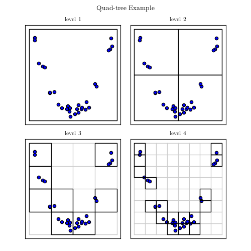

Quad Tree Example¶
Figure 2.3.
This example creates a simple quad-tree partition of a two-dimensional parameter space, and plots a visualization of the result.
{kind=link}
# Author: Jake VanderPlas
# License: BSD
# The figure produced by this code is published in the textbook
# "Statistics, Data Mining, and Machine Learning in Astronomy" (2013)
# For more information, see http://astroML.github.com
# To report a bug or issue, use the following forum:
# https://groups.google.com/forum/#!forum/astroml-general
import numpy as np
from matplotlib import pyplot as plt
#----------------------------------------------------------------------
# This function adjusts matplotlib settings for a uniform feel in the textbook.
# Note that with usetex=True, fonts are rendered with LaTeX. This may
# result in an error if LaTeX is not installed on your system. In that case,
# you can set usetex to False.
if "setup_text_plots" not in globals():
from astroML.plotting import setup_text_plots
setup_text_plots(fontsize=8, usetex=True)
# We'll create a QuadTree class which will recursively subdivide the
# space into quadrants
class QuadTree:
"""Simple Quad-tree class"""
# class initialization function
def __init__(self, data, mins, maxs, depth=3):
self.data = np.asarray(data)
# data should be two-dimensional
assert self.data.shape[1] == 2
if mins is None:
mins = data.min(0)
if maxs is None:
maxs = data.max(0)
self.mins = np.asarray(mins)
self.maxs = np.asarray(maxs)
self.sizes = self.maxs - self.mins
self.children = []
mids = 0.5 * (self.mins + self.maxs)
xmin, ymin = self.mins
xmax, ymax = self.maxs
xmid, ymid = mids
if depth > 0:
# split the data into four quadrants
data_q1 = data[(data[:, 0] < mids[0])
& (data[:, 1] < mids[1])]
data_q2 = data[(data[:, 0] < mids[0])
& (data[:, 1] >= mids[1])]
data_q3 = data[(data[:, 0] >= mids[0])
& (data[:, 1] < mids[1])]
data_q4 = data[(data[:, 0] >= mids[0])
& (data[:, 1] >= mids[1])]
# recursively build a quad tree on each quadrant which has data
if data_q1.shape[0] > 0:
self.children.append(QuadTree(data_q1,
[xmin, ymin], [xmid, ymid],
depth - 1))
if data_q2.shape[0] > 0:
self.children.append(QuadTree(data_q2,
[xmin, ymid], [xmid, ymax],
depth - 1))
if data_q3.shape[0] > 0:
self.children.append(QuadTree(data_q3,
[xmid, ymin], [xmax, ymid],
depth - 1))
if data_q4.shape[0] > 0:
self.children.append(QuadTree(data_q4,
[xmid, ymid], [xmax, ymax],
depth - 1))
def draw_rectangle(self, ax, depth):
"""Recursively plot a visualization of the quad tree region"""
if depth is None or depth == 0:
rect = plt.Rectangle(self.mins, *self.sizes, zorder=2,
ec='#000000', fc='none')
ax.add_patch(rect)
if depth is None or depth > 0:
for child in self.children:
child.draw_rectangle(ax, depth - 1)
def draw_grid(ax, xlim, ylim, Nx, Ny, **kwargs):
""" draw a background grid for the quad tree"""
for x in np.linspace(xlim[0], xlim[1], Nx):
ax.plot([x, x], ylim, **kwargs)
for y in np.linspace(ylim[0], ylim[1], Ny):
ax.plot(xlim, [y, y], **kwargs)
#------------------------------------------------------------
# Create a set of structured random points in two dimensions
np.random.seed(0)
X = np.random.random((30, 2)) * 2 - 1
X[:, 1] *= 0.1
X[:, 1] += X[:, 0] ** 2
#------------------------------------------------------------
# Use our Quad Tree class to recursively divide the space
mins = (-1.1, -0.1)
maxs = (1.1, 1.1)
QT = QuadTree(X, mins, maxs, depth=3)
#------------------------------------------------------------
# Plot four different levels of the quad tree
fig = plt.figure(figsize=(5, 5))
fig.subplots_adjust(wspace=0.1, hspace=0.15,
left=0.1, right=0.9,
bottom=0.05, top=0.9)
for level in range(1, 5):
ax = fig.add_subplot(2, 2, level, xticks=[], yticks=[])
ax.scatter(X[:, 0], X[:, 1])
QT.draw_rectangle(ax, depth=level - 1)
Nlines = 1 + 2 ** (level - 1)
draw_grid(ax, (mins[0], maxs[0]), (mins[1], maxs[1]),
Nlines, Nlines, linewidth=1,
color='#CCCCCC', zorder=0)
ax.set_xlim(-1.2, 1.2)
ax.set_ylim(-0.15, 1.15)
ax.set_title('level %i' % level)
# suptitle() adds a title to the entire figure
fig.suptitle('Quad-tree Example')
plt.show()